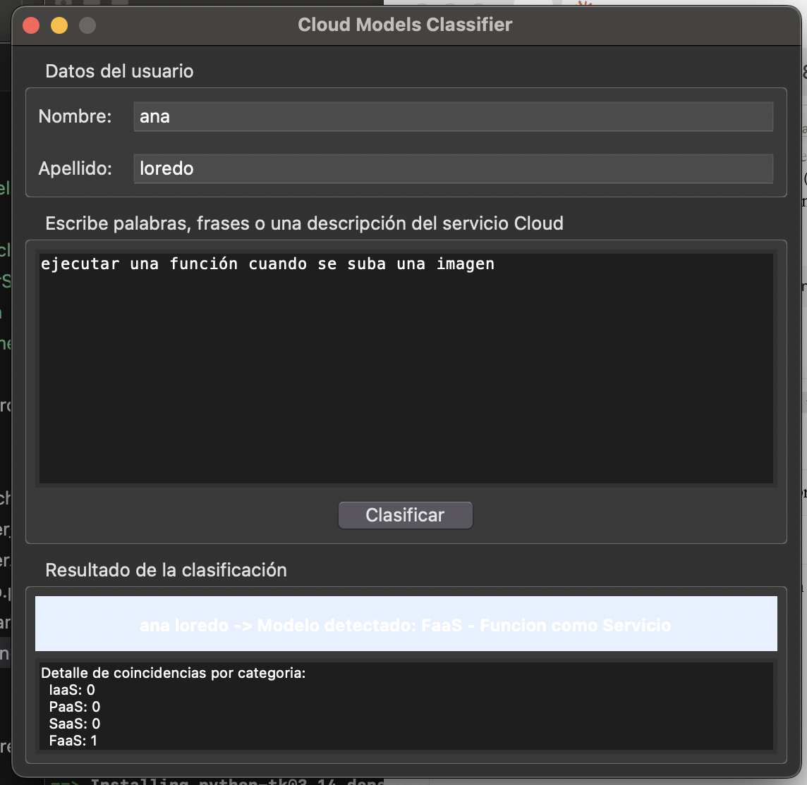
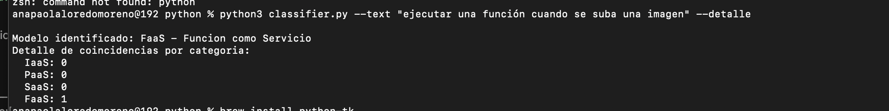

Materia:
Integración de Aplicaciones Computacionales
Profesor:
Dr. Raúl Morales Salcedo
Alumna y Matrícula:
Ana Paola Loredo Moreno – 613772
Doy mi palabra de que he realizado esta actividad con integridad académica.
San Pedro Garza García, N.L, México a 17 de agosto del 2026
El objetivo de esta tarea fue reimplementar en Python el clasificador de modelos Cloud (IaaS, PaaS, SaaS y FaaS) originalmente desarrollado en Java, mejorando el diseño mediante separación de responsabilidades, procesamiento básico de lenguaje natural (NLP) y reutilización de componentes entre dos interfaces distintas: una gráfica (GUI) y una de línea de comandos (CLI).
El programa recibe una descripción en texto libre de un servicio Cloud y determina, mediante coincidencia de palabras clave, a qué modelo de servicio corresponde con mayor probabilidad.
El proyecto se organizó en tres módulos independientes:
Contiene toda la lógica de negocio: normalización de texto, tokenización, bancos de palabras clave, conteo de coincidencias, clasificación y validación de datos. No conoce nada de GUI ni CLI.
Interfaz de línea de comandos con argparse.
Importa las funciones de classifier_service.py,
no duplica lógica.
Interfaz gráfica con Tkinter: captura de nombre/apellido,
entrada de texto y presentación del resultado. También importa
las mismas funciones de classifier_service.py.
Se aplicó procesamiento básico de lenguaje natural en tres pasos:
unicodedata), para que
"función" y "funcion" se traten igual.\w+).Cada categoría (IaaS, PaaS, SaaS, FaaS) tiene su propio banco de palabras clave. Se cuentan las coincidencias por categoría y gana la de mayor puntaje; si todas quedan en cero, el resultado es "No concluyente".
Fragmento clave de classifier_service.py (normalización y clasificación):
# Normalización y tokenización def normalizar(texto): return quitar_tildes(texto.lower()) def tokenizar(texto): return re.findall(r"\w+", texto, flags=re.UNICODE) # Clasificación: se ejecutan las 4 categorías y gana la de mayor puntaje def clasificar(texto_original): texto = normalizar(texto_original) puntajes = {cat: contar_coincidencias(texto, kws) for cat, kws in CATEGORIAS.items()} maximo = max(puntajes.values()) categoria = ("No concluyente" if maximo == 0 else next(c for c, p in puntajes.items() if p == maximo)) return ResultadoClasificacion(categoria, puntajes)
Fragmento de classifier.py (CLI reutilizando la misma lógica):
from classifier_service import clasificar, validar_datos parser.add_argument("--text", "-t", required=True) resultado = clasificar(args.text) print(f"Modelo identificado: {resultado.categoria_ganadora}")
Los archivos completos (classifier_service.py,
classifier.py, gui_app.py) se entregan junto
con este reporte.
Interfaz gráfica ejecutada con python3 gui_app.py,
mostrando la captura de nombre/apellido, la descripción ingresada y el
resultado de la clasificación:

Ejecución desde terminal usando la interfaz de línea de comandos:

| Entrada | Resultado esperado | Resultado obtenido | Estatus |
|---|---|---|---|
| "necesito una maquina virtual con almacenamiento y balanceador de carga" | IaaS | IaaS (puntaje 3) | Correcto |
| "quiero desplegar mi app en una plataforma con ci/cd y un framework" | PaaS | PaaS (puntaje 3) | Correcto |
| "uso gmail y dropbox desde el navegador sin instalacion" | SaaS | SaaS (puntaje 4) | Correcto |
| "ejecutar una funcion serverless cuando se suba una imagen" | FaaS | FaaS (puntaje 2) | Correcto |
ModuleNotFoundError: No module named
'tkinter'), requiriendo instalar el paquete
python3-tk por separado.classifier_service.py)
e interfaces, permitiendo que GUI y CLI compartan exactamente el
mismo código de clasificación sin duplicación.validar_datos)
reutilizada tanto en GUI como en CLI.ValidacionError, capturada de forma distinta en cada
interfaz (diálogo en GUI, mensaje en stderr en CLI).La reimplementación en Python permitió aplicar principios de buen diseño de software separación de responsabilidades y reutilización de componentes de forma más directa que en la versión original en Java. Además, incorporar un procesamiento de lenguaje natural básico hizo la clasificación más confiable frente a coincidencias parciales incorrectas. Las cinco pruebas realizadas confirmaron que el clasificador identifica correctamente los cuatro modelos de servicio Cloud, así como los casos sin coincidencias.
Puedes descargar todos los scripts utilizados en la práctica en el siguiente archivo:
📦 Descargar proyecto python